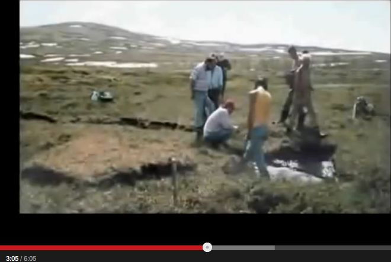
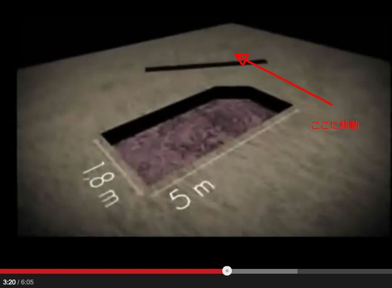
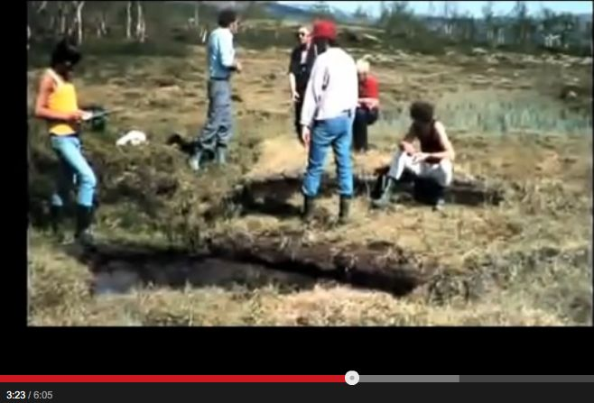

Hessdalen,Norway : 2 tons of the earth's surface was cut off and moved in an area where UFO sightings are frequent → Explain the mechanism of this phenomenon
 
History
(2022-07-25) Voice transcription (auto-generated) added (2016.05-16) Identity of the mystery added (2014.11.02) Added video of news program reporting similar phenomenon (2014.10.23) CreatedSummary
- This topic has been reported since 3:00. It was a mysterious incident that occurred in Hessdalen, Norway, near the famous UFO sighting zone. - A wet grassy ground surface was cut off and placed a few meters away from the site. The total weight of the cut surface weighed as much as two tons. The cut appears to have been made with a laser, but there is no evidence of any earth-moving equipment in the area, and the site is in the middle of nowhere.  - I saw an article around the beginning of spring that the mystery of such a phenomenon had been solved, but I forgot to introduce it. Unfortunately, I forgot to record the source article, so I will introduce the mystery that has been solved based on my vague memory of the source article if I cannot find it in a search by the next time.Video（6:00）
・Scientific UFO Evidence in Norway (2014.10.23)
(2014.11.02 begin) - This same phenomenon occurred in a completely different location, and it was reported on a news program. The video is below. This phenomenon is called the "Cookie Cutter Phenomenon. (2022-07-25 begin) - Note: An audio transcript (auto-generated) of this news program should be added below.Audio transcript (auto-generated)
(2022-07-25 end)▼Click to expand
0:00 central Washington state but the events 0:03 of the last few days have changed that 0:05 they have attracted scientists from all 0:07 over the country and stumped them all 0:09 how can a big chunk of Earth just get up 0:12 and move away the mystery barely 0:14 unraveled by Leslie Donovan from the air 0:19 you can see what scientists call a 0:21 phenomenon somehow a large chunk of 0:24 Earth was plucked from the ground and 0:25 dropped down some 70 feet away two ways 0:29 coming together all right where they 0:30 meet you get an amplification of of the 0:33 waves geologist Greg Behrens has never 0:36 seen anything like this he says not 0:38 humans nor machines could have moved a 0:40 chunk of Earth this huge without leaving 0:42 a trace you know at first I was rather 0:45 skeptical wondering if if someone had 0:47 come up here and was trying to pull a 0:48 hoax being in such a remote area like 0:50 this the likelihood that being 0:52 discovered would be almost nil to start 0:55 with and then looking around the area 0:57 and seeing that that there isn't any 0:59 indication that man had done it it's 1:02 it's real intriguing scientists figured 1:04 that chunk weighs about three tons and 1:06 perfectly matches the whole like a 1:08 puzzle piece the piece fits but little 1:11 else matches up in the pit the roots are 1:13 intact 1:14 that means the chunk was torn from the 1:16 ground or ejected that can sometimes 1:18 occur during an earthquake in October 1:21 there was a mild earthquake centered 20 1:24 miles from the hole but an earth 1:25 ejection this huge would have to come 1:28 from a major shaker nothing like that 1:30 has been reported here meteors leave 1:32 craters but not holes like this one so 1:35 where does this leave scientists well 1:37 they'll study the hole for more clues 1:39 but the answer may come from something 1:41 we don't understand 1:42 Barrens isn't ruling out the possibility 1:44 of an extraterrestrial cause near Grand 1:48 Coulee Washington 1:49 Leslie Donovan King 5 news Wow you don't 1:53 suppose the wind did it no and I don't 1:55 suppose and Jeff is right as he suggests 1:57 that an earthworm didn't Mysteries was 2:00 all alone 2:02 I mean selection can of the Month ClubVideo（2:00）
・Mystery Hole in Eastern Washington Cookie Cutter Phenomenon (2014.11.02 end)
(2016-05-16 begin) - I saw a source article some years ago about these cases that unraveled the mystery of what they are. But I forgot to record the site of the source article and have yet to find it. - I knew I should have recorded interesting material, whether incomplete or halfway through, "with a link to the source article," on the spot, and posted it that day. - I should have finished this article based on the source article, but that would have been too late and probably would have been forgotten. I will describe the identity of this mystery based on my hazy memory of many years ago. - The cause of this mystery is a lightning strike on the ground. The energy of the lightning strike caused the water in the soil just below the surface to evaporate explosively, and the force of the evaporation "cut off the surface of the wet meadow and placed it several meters away." - The lost source article referred to one paper that investigated a similar case (which occurred in a completely different location than the Norwegian site above) in detail. It also found evidence of lightning scorch marks on the ground at a site where "the ground surface of a wet meadow had been cut away and placed several meters away." The authoer then argued that the cut marks, which looked like laser cuts in straight lines, could also be caused by lightning strikes. - If I see that source article or paper in the future, I would like to add it. (2016-05-16 end)
Thanks
- Translated with www.DeepL.com/Translator (free version)
(2022-07-27 translate)
First Published article (Japanese)
総重量数トンの草地の地表面が切り取られ、移動する現象の謎が解明された（途中：その3） (2016-05-16)
Degree of completion of this article: